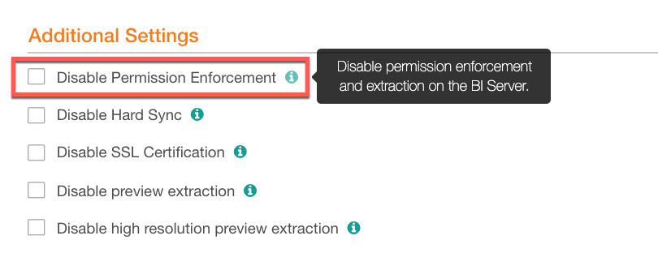
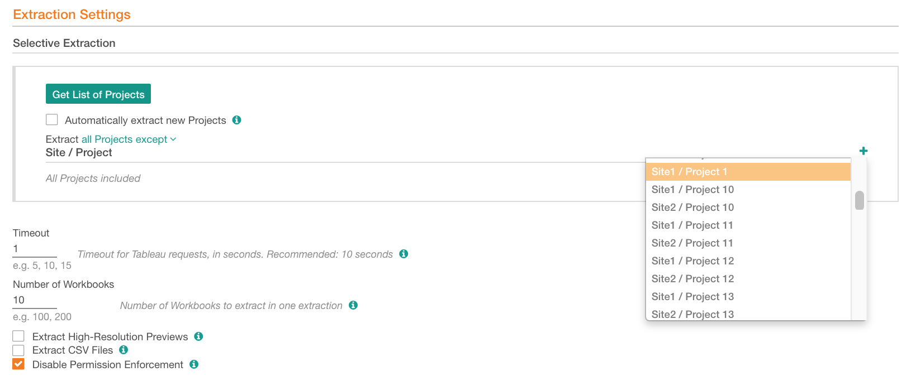
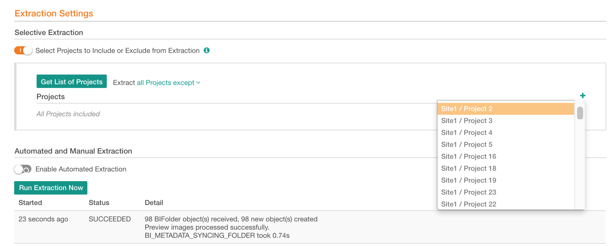

Tableau Permission Mirroring¶
Permission Mirroring enables you to regulate view access to objects in a Tableau source based on the same access rights that users have on the Tableau server.
With Permission Mirroring enabled for your Tableau source, Alation will only display those Tableau objects to a user which this user can see in Tableau.
Permission mirroring:
Applies to sites, projects, workbooks, sheets, and datasources
Applies to all Alation users, including users with the Server Admin role
Example:
Tableau Site A has two projects, Public and Private. Project Public can be viewed by all users of Site A, but project Private is restricted to one user group and is only visible to this group. User John Smith belongs to this group. User Jane Brown does not. In Alation, a server admin extracts both projects: Site A/Public and Site A/Private. When user John Smith logs in to Alation and opens the page of the Tableau source, he will be able to see and access the catalog pages of both projects, Site A/Public and Site A/Private, under this Tableau source. When user Jane Brown logs in to Alation, she will only see the project Site A/Public but will not see Site A/Private because she does not have Tableau permissions to view it.
In release V R5 (5.9.x) and later, permission mirroring is enabled by default. The parameter Disable Permission Enforcement on the Tableau source settings page can be set to disable it. When permission mirroring is disabled, Alation does not enforce permission checks for extracted Tableau objects, and Alation users can see all extracted metadata:
{kind=link}
Note
Release V R5 (5.9.x) and later releases have two frameworks for Tableau sources: Legacy and Generic. For details, see Add Tableau Server as a BI Source. Both Legacy and Generic frameworks support permission mirroring for Tableau server version 2018.1. Sources for Tableau server versions 2018.3, 2019.1, 2019.2 must be added on the Generic framework if you intend to use permission mirroring. Alation recommends enabling the Generic framework for your Tableau sources because it offers more features and a more robust functionality.
Matching Tableau and Alation Users¶
To enforce Tableau permissions, Alation has to “understand” which Alation user is which user in Tableau. That is why, during extraction Alation also calculates the Tableau - Alation user matches.
User matching is based on username if the username of an Alation user matches a username on the Tableau server, we consider them to be the same. For permission mirroring to work, the expectation is that the Tableau and Alation users have the same username in both these systems. As an example, look at a user named John Smith. Assume that on the Tableau server, this person has a username jsmith@company.com, but in Alation, he is added as john.smith@company.com. When calculating user matches, Alation will NOT be able to match these two usernames and associate them with one user because they do not formally match. John Smith will not be able to see any Tableau objects as Alation does not have his Tableau permissions record. However, if this user is added as jsmith@company.com to both Tableau and Alation, Alation will be able to establish the match and permission mirroring will work: John Smith will see those Tableau objects in Alation which he has permissions to view on the Tableau server.
Note
Alation - Tableau user matching is case-insensitive. This means that usernames john.smith@company.com and John.Smith@company.com will be matched as the same user.
Enabling permission mirroring makes the most sense when Alation and Tableau are using the same authentication mechanism, for example LDAP authentication with the same LDAP directory. If not, those users in Alation who require access to a Tableau source, must be created with the same usernames as in Tableau.
Extracting Tableau Objects With Permission Mirroring Enabled¶
When enabled, permission mirroring will apply when:
you are fetching project information for your Alation source from the Tableau server;
you are running metadata extraction from Tableau;
after extraction, when you access the Tableau source and its child objects in the catalog.
Note
You must be a Server Admin in Alation to access the settings of a BI source and to run extraction. Alation recommends that the Server Admin who configures a Tableau source in Alation has Tableau permissions to all Tableau objects that need to be cataloged in Alation. This will ensure that the admin will be able to see and extract all the Tableau objects that your users should be able to find the catalog.
Fetching Project Information¶
Fetching project information from the Tableau server is a preliminary step for selective extraction. Selective extraction allows you to get a list of available projects from Tableau then select specific projects for extraction into the catalog. With permission mirroring enabled, Alation will fetch all sites and projects from the server, but the currently logged-in Server Admin will only see the sites/projects they have access to on the Tableau server. This means that if you are a Tableau server admin with full permissions, you will see all the sites/projects when you do Get List of Projects for your Tableau source. If you are a user with limited permissions, you will only see those sites/projects in the fetched list that you have permission to see in Tableau. also note that fetching projects does not equal extraction: it is a prerequisite operation that allows an Alation admin to retrieve a list of projects from which they will later select the projects for extraction. The fetched listing of sites/projects on the Tableau source settings page does not reflect the list of workbooks extracted into the catalog that users see on the respective catalog pages.
Fetched sites/projects list (Legacy framework):
{kind=link}
Fetched sites/projects list (Generic framework):
{kind=link}
Running Extraction¶
By default, selective extraction is disabled and if you leave it disabled and run extraction, Alation will extract workbooks from all sites/projects that the currently logged-in Alation admin has access to on the Tableau server. If this Alation admin also is a Tableau server admin with full permissions, they will extract workbooks from all the sites/projects on the Tableau server. If they are a user with limited permissions, they will only extract those workbooks that they have permission to see in Tableau.
How Does Permission Mirroring Work?¶
During extraction from Tableau with permission mirroring enabled, Alation retrieves Tableau user information and permissions for the extracted objects. Alation only gets information about users with the View access to Tableau objects. View permission is enough for Alation as we only need to know if a user “can see” a specific Tableau object.
Access information is retrieved for sites, projects, data sources, workbooks, and sheets currently found on the Tableau server. Because in Tableau access to objects is defined by multiple factors , Alation defines access taking into account both the site role of a user and any object-level permission rules enforced through groups or directly applied to users. We retrieve information on View permissions for users with all site roles except Unlicensed.
First, Alation matches Alation users onto Tableau users, and the matches are recorded in the Alation server database alongside with the users’ object access information for each extracted object. After user matching calculation, Alation “knows” which Alation user is also a Tableau user and which Tableau objects this user can view.
When a user logs in to Alation and opens the catalog page of a Tableau source, Alation retrieves their Tableau permission information and only displays the objects they can view in Tableau. If an Alation user does not have a matching user record in Tableau, they will not see any objects at all as Alation does not have a Tableau permission record for them.
For example, a user who has the Site Administrator role for a site in Tableau will have View access to all child objects on this site. In Alation, under the Tableau source, this user will be able to see all the extracted objects for this site (on the condition that all objects are extracted).
On the other hand, if a user has the Viewer role for a site in Tableau and is only allowed to see a few specific reports through Tableau access rules, this user will only see these permitted reports in Alation, but nothing beyond those allowed objects. The objects that this user cannot access in Tableau will not appear for this user on the catalog page of the Tableau source in Alation.
Note
Users with the site role Unlicensed will not be able to see any extracted objects under a Tableau source in Alation.